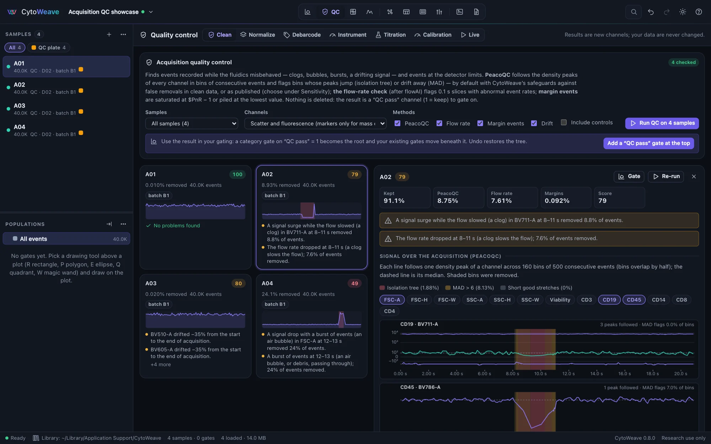
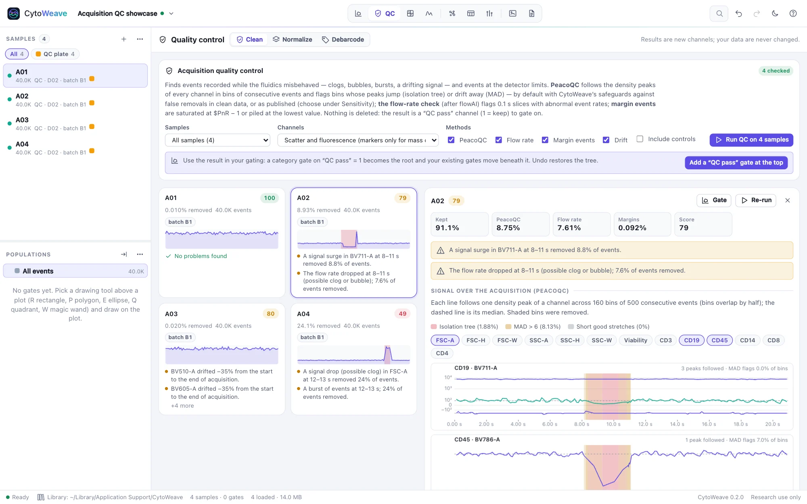
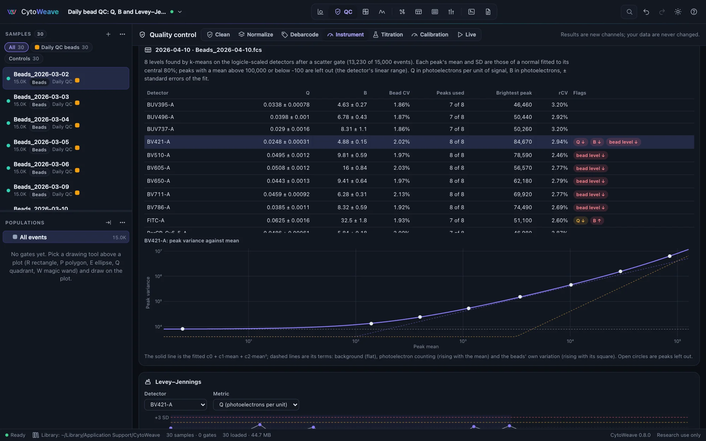
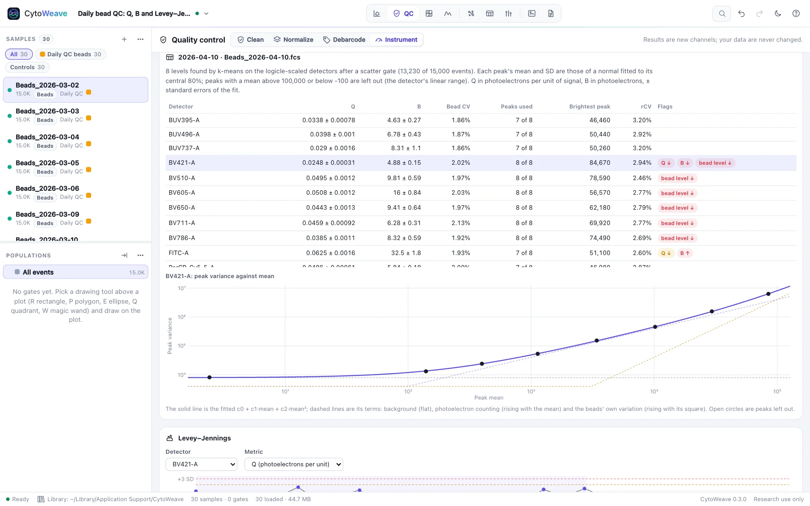
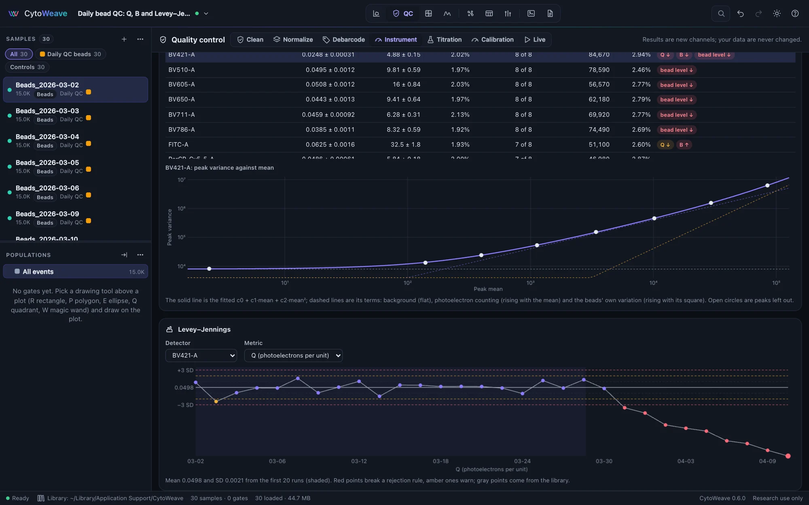
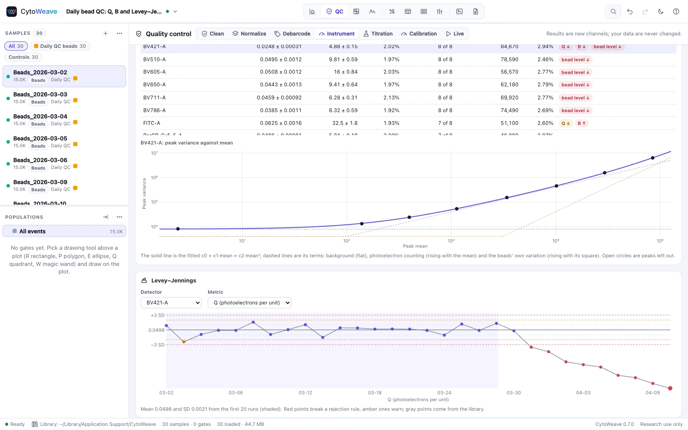
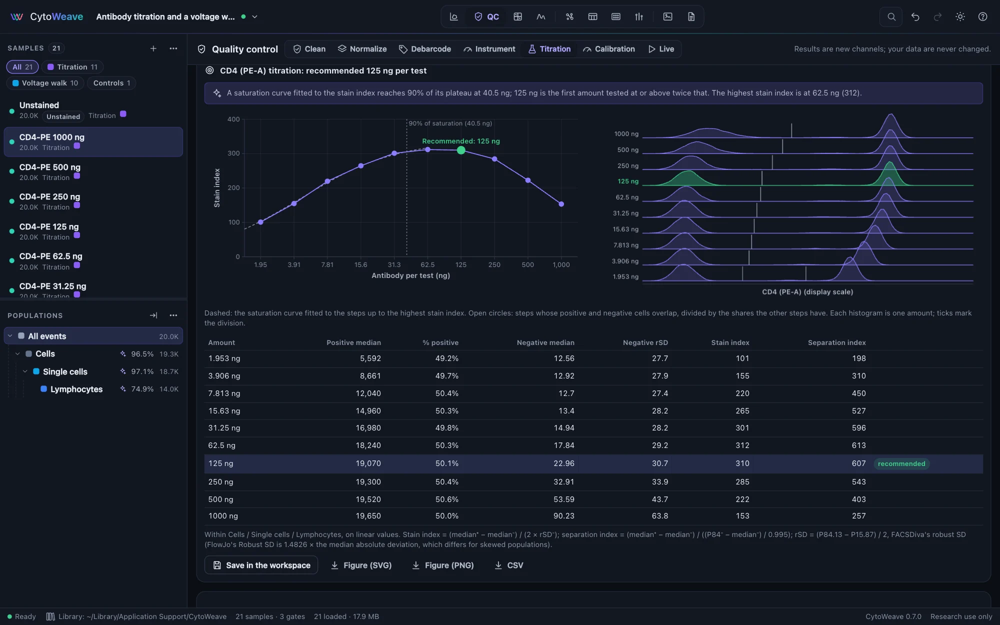
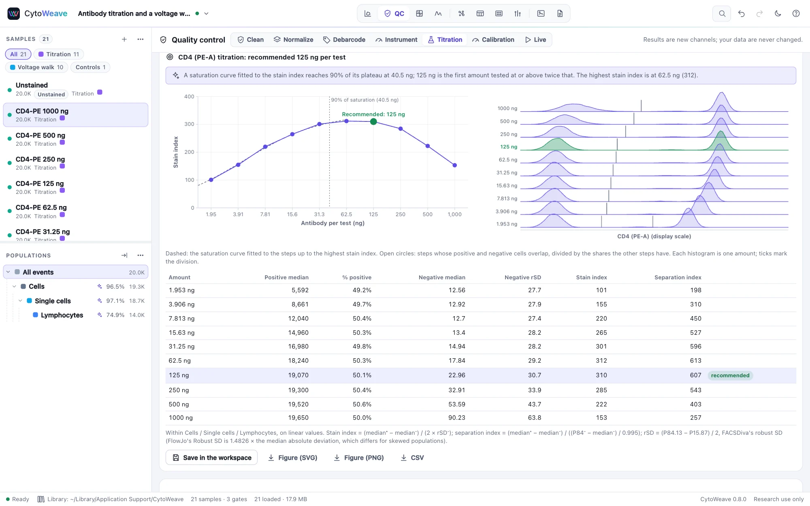
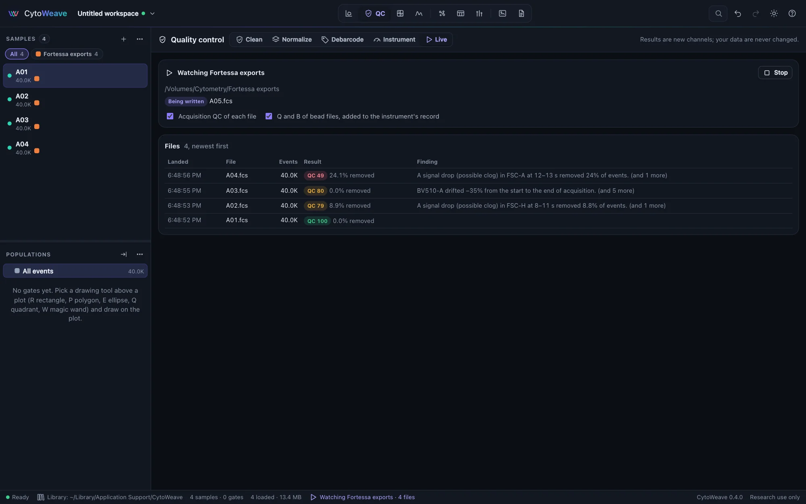
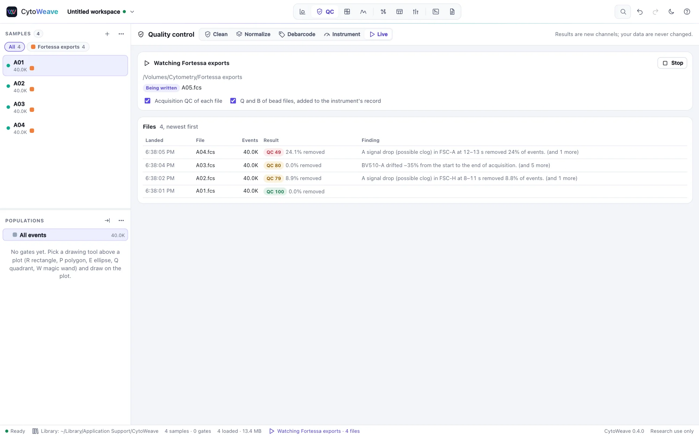

Acquisition QC
Find the events recorded while the fluidics misbehaved, and gate them out, without touching the data or removing events from files that were fine.
Running QC


- Open the QC view. Clean is selected.
- Choose the Samples and Channels: scatter and fluorescence (marker channels only, for mass cytometry), all scatter and fluorescence channels, or scatter and channels with a marker. Controls are left out unless you tick Include controls.
- Choose the Methods (all four by default):
- PeacoQC: follows the density peaks of every channel in bins of consecutive events, and flags bins whose peaks jump (isolation tree) or drift away (more than 6 MADs from the median).
- Flow rate: events per 0.1 s, with a generalized ESD test for slices with an abnormal rate, as flowAI does. It needs a time channel.
- Margin events: events saturated at the top of a detector's range or piled up at its lowest value.
- Drift: the median of each channel per time bin, and its change from start to end. Drift is reported, not removed.
- Click Run QC on n samples. Large samples run in a background worker, and the window stays responsive.
Reading the results
Each sample gets a card with its score, the share of events removed, a trace of its signal over the acquisition, and its findings in plain language: "The flow rate dropped at 8–11 s (possible clog or bubble); 7.6% of events removed", "BV510-A drifted −35% from the start to the end of acquisition". The Cohort overview lists the samples to review first.
The score is 100, minus 2 per percent of events removed (at most 60), 3 per flow-rate episode (at most 15) and 5 per drifting channel (at most 20). Samples below 70 deserve a look.
Click a card to open its detail: what each method removed, and the peak trajectory of every channel over time, with the removed bins shaded by the method that flagged them. Gate opens the sample in the Gate view, and Re-run checks it again.
Using the result
QC never deletes or changes events. Its result is a new channel, QC pass (1 = keep, 0 = removed), for each sample checked. To use it:
- Click Add a "QC pass" gate at the top. A gate on QC pass = 1 becomes the root of the gating tree, and every existing population moves beneath it, so all statistics use only events that passed QC. Undo restores the tree as it was.
- Or gate on the QC pass channel yourself, wherever in the tree you want it.
Refined and classic PeacoQC
As published, PeacoQC removes events from clean files and cuts the ends of files whose signal drifts slowly. CytoWeave's default, refined, adds three safeguards:
- a bin's peak joins a trajectory only when it is nearer to it than to the neighboring one;
- MAD flags are narrowed to the bins whose own value deviates, by more than the signal's noise and by at least 1.5% of the axis, instead of spreading a short clog over ±25 bins;
- the isolation tree only isolates bins that are contiguous in time.
On the validation suite's simulated wells, refined QC removes 99.8–100% of the anomalous events and none from the clean or drifting files. Classic, a port of PeacoQC 1.22, removes the same events as PeacoQC in R.
Under Sensitivity, choose the variant and PeacoQC's parameters (MAD threshold, isolation-tree limit, consecutive bins), then Re-run and compare to see how much the result depends on them, side by side.
Q, B and Levey–Jennings


The Instrument tab characterizes the cytometer itself. How many photoelectrons a detector collects per unit of signal (its efficiency Q) and how much background light and electronic noise it adds (B, in photoelectrons) decide how dim a population it can resolve. Both come from beads of known uniformity: each intensity level's variance grows with its mean as c0 + c1·mean + c2·mean², so Q = 1/c1, B = c0/c1² and √c2 is the beads' own CV (Parks et al. 2017).
- Acquire multi-level beads (8-peak rainbow beads, 6-peak beads and the like) and give the files the role bead, or use an LED pulser series with one level per file.
- Choose the beads (or the number of levels) and click Measure. The levels are found by k-means on the detectors together after a scatter gate; each level's mean and SD are those of a normal fitted to its central 80%; levels outside the detector's linear range are left out; the fit is weighted and re-weighted until it settles. This is flowQB's method, and the validation suite checks that CytoWeave gives flowQB's results on flowQB's data.
- Read each detector's Q and B with their standard errors, the beads' CV and the brightest level's robust CV. Click a detector for its peak variance against mean, with the fit and its three terms.


Save to the instrument's record keeps the runs in the library, by cytometer and serial number, so later experiments add to the same history. Levey–Jennings charts follow Q, B, the beads' CV or one bead level of any detector across runs, against the mean and SD of the first runs (20 by default). A run is out of control when it breaks a Westgard rule: one value beyond 3 SD, two beyond 2 SD on one side, a swing of 4 SD between runs, four beyond 1 SD or ten on one side. One value beyond 2 SD only warns: among dozens of detectors, that happens by chance on most days. A falling Q points to a detector or its voltage, a rising B to stray light or a dirty flow cell, and a falling bead level with steady Q to a laser.
Try it on the example Daily bead QC: 30 runs, a PMT that ages from run 21, a dirty flow cell on run 25 and a weaker violet laser from run 27.
Titration and voltage walks


The Titration tab sets up a panel. It analyzes a series of samples that differ in one setting, on one channel and within one population (lymphocytes, say, so that the cells that carry the antigen and those that do not are both there, without debris and doublets):
- A titration: the same cells stained with a series of amounts of one antibody. The amounts are read from the file names ("CD4-PE 125 ng", "CD8 1-200", "2.5 uL") or from an amount annotation; a file named as unstained is set apart.
- A voltage walk: the same cells acquired at a series of PMT voltages. Each file's voltage for the channel is read from its
$PnVkeyword; a voltage that many files share (the experiment's own setting) is left out.
At each step the negative and positive cells are found from the data: below the valley above the dimmest population and above the valley below the brightest. Where they overlap, at very low amounts, the step takes the shares of negative and positive cells that the other steps have (they are the same cells), and is marked. The table gives each step's medians, the negative cells' rSD, the share of positive cells and two indices, on linear values:
- Stain index = (median⁺ − median⁻) / (2 × rSD⁻) (Maecker et al. 2004);
- Separation index = (median⁺ − median⁻) / ((P84⁻ − median⁻) / 0.995) (Bigos 2007), which looks only at the bright side of the negative cells;
- with rSD = (P84.13 − P15.87) / 2, BD FACSDiva's robust SD. FlowJo 11's Robust SD is 1.4826 times the median absolute deviation instead (checked on the example's files in FlowJo 11.2): the two agree for a symmetric population, but not for a skewed one. On the example's negative cells FlowJo's is up to 8% smaller, so a stain index computed from FlowJo's table can be up to 8% higher.
The amount to use. The stain index rises with the amount of antibody until the antigen is saturated, then levels off or falls as unbound antibody raises the background. CytoWeave fits a saturation curve, SI = SImax × c / (K + c), to the steps up to the highest stain index; 90% of saturation is reached at 9K, and the recommended amount is the first one tested at or above twice that, as Bonilla et al. (2024) recommend. It says when the curve has not reached saturation (titrate higher), when even the lowest amount is near it (titrate lower), and when the stain index at the recommended amount is well below its highest (excess antibody).
The voltage range. At low voltages the negative cells' spread is the detector's electronic noise; as the voltage rises, their own spread rises above it. The minimum voltage is where the negative cells' rSD reaches 2.5 times the electronic noise rSD (rSDEN), the criterion BD uses for application settings (Meinelt et al. 2012). Enter rSDEN from the cytometer's baseline report (BD CS&T reports it for every detector), or leave it empty: CytoWeave measures how fast the signal grows with voltage from the positive cells' median (as Vn) and fits rSD⁻² = rSDEN² + a V2n, which needs a walk that starts low enough for the noise to show. The maximum voltage keeps the positive cells' 99th percentile within the detector's linear range (its linearity maximum from the baseline report, or 90% of the range). The recommended voltage is the minimum, rounded up to 5 V, which leaves the most room for brighter cells.
A plot shows the stain index against the amount with the fitted curve (or the negative cells' rSD against the voltage with the noise and the range), and stacked histograms show every step with the ticks where its cells were divided. Figure exports both as SVG or PNG for the panel's record, CSV the table, and Save in the workspace keeps the result, which the methods then describe with their references.
Try it on the example Antibody titration and a voltage walk (add its suggested gates and analyze within Lymphocytes): CD4-PE in ten two-fold steps, and the PE detector from 300 V to 750 V. Its CD4 is 90% bound at 45 ng, so 125 ng is the right answer; the detector's electronic noise rSD is 25.
QC as files are acquired


With the CytoWeave program, QC can run while you acquire. Point it at the folder your instrument exports to, and each FCS file is checked as soon as it is complete, so a clog or a failing detector shows up before the next tube instead of at the end of the day.
- Open QC → Live, type the folder's path and click Watch. Or start CytoWeave watching it:
cytoweave --watch <folder>. - Each new FCS file in the folder (or its subfolders) is added to the workspace, in a group named after the folder, once the instrument has finished writing it. A file counts as finished when its size has not changed for one check (every second) and its FCS header says all its data are there, which also works on network shares.
- Samples and controls get the acquisition QC of Clean, with its settings. Files named as beads ("Beads_2026-03-31", "CS&T beads") get Q and B instead, with the bead settings of Instrument. The run is added to the instrument's record, and the Levey–Jennings rules check it against all earlier runs.
- A file that scores below 70, or a bead run with a detector out of control, raises a notice. The Live table lists every file with its result, newest first; click one to open it in Clean or Instrument. The status bar shows the watch from any view.
The folder is only read; nothing is ever written there. Files already in the folder when watching starts are counted but not opened, unless you click Check the files already there. Hidden files, names starting with ~ and other extensions (an exporter's temporary .part file, say) are ignored until they are renamed to .fcs.
Most acquisition software writes a file when a tube is finished, so this is QC per tube, not per event. Large files are checked faster because PeacoQC's per-channel work, which is almost all of its time, runs on up to four workers at once. They read the same events from shared memory and give exactly the serial result: at two million events in 20 channels, 3.4 s instead of 10.5 s.